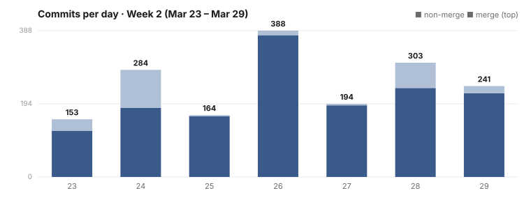

Dispatch · Week 2 (2026-03-23 → 2026-03-29)
Your memories are now encrypted on disk so only you can read them.
The trust / consent / encryption era, fully arrived. Week 1 laid the identity foundation; this week the social and relational layer landed all at once — and the database was rebuilt under everyone's feet while it happened. It's the busiest single week of the whole backfill so far.

By the numbers
- 1,727 commits (verified line count of the full week's log) — busiest day Thursday 2026-03-26 at 388.
- ~22 items shipped, including the Sovereign Foundation umbrella, the trust graph, the consent engine, the consent audit trail, hives going from local network to the open internet, and the removal of the old graph database.
- 2 items confirmed cancelled — trust decay & demurrage, and standalone revocable access. On purpose; see below.
- Net code: a major refactor week, not a headline number (an estimate, not a precise figure). The cleanups dominate the diff: 13,955 lines deleted in one plugin-wiring change, 3,225 deleted for the graph-database removal, and all raw SQL stripped to zero across the codebase. The honest lead stat is the commit count, not net lines of code.
- Tests: per-feature, not summed (an estimate, not a precise figure) — e.g. fleet unification = 73 tests, chat-as-memory = 76/76, hive over the open internet = 66, the plugin pipeline = 80/80.
Shipped
- New — Your memories are encrypted on disk, and only you can read them. Encryption is applied field by field, with a guarantee that you can always reach your own data. (Memory that only you can read; under the hood: per-field AES-256-GCM.)
- New — Decide exactly who you trust, and for what. Relationships become explicit, typed connections you can reason about — not an ambient "you're on the list" — capped at a human number of close ties. (Trust is directional; a Dunbar-capped trust graph.)
- New — Nothing is shared unless you say yes, and every yes is recorded where no one can tamper with it. Reads and shares are denied by default until a signed grant allows them, and every grant lands in an append-only trail you can audit. (The default-deny consent engine; BLAKE3 hash-chained.)
- Improved — Your group spaces now work over the open internet, not just on a local network — with gossip, lazy sync, backup, and compaction carrying them from a three-machine proof to the wider world.
- Improved — A faster, cleaner data layer underneath everything. The database went fully graph-native, closing out a migration of 879 query calls with zero raw SQL left in application code. (Killing raw SQL.)
Broke & fixed (honest)
- The fleet stepped on itself. Three consecutive agent-merge reverts landed in a single day (2026-03-28). A bad merge triplet, backed out the same day it broke.
- A source file was corrupted by piping
git showinto it, then restored (2026-03-29). An honest, slightly absurd scar from moving fast with sharp tools. - We shipped the bad news before the good news. An honest audit report published a scorecard showing only 31% of the migration's exit conditions passing (2026-03-28) — before the win landed the next day. Owning the 69% not-yet-done in writing, on the record, is the discipline; the celebration came after.
Concept of the week — default-deny consent
The week's spine is one idea: nothing is shared unless something explicitly says it can be. Access in NAOMS isn't an ambient "you have permission because you're on a list." It's four layers, each independently revocable: a verified identity, an explicit trust edge to that identity, a signed consent rule that grants a specific scope, and a scoped capability token that carries that grant to the thing doing the work. Pull any layer and access stops. Every grant and every revocation is written to a hash-chained audit trail, so the history of who could see what, and when, is itself tamper-evident. Trust here is a graph of explicit edges, not a default you have to remember to remove.
What's next
- Cross-instance trust handshake — partial. The first-phase handshake protocol and ECDH friendship keys started this week, but the work never reached the finish line; it's still in progress. Started, not finished.
- Unified plugin system — in-progress. A huge Friday push landed the pipeline at 80/80, but the day closed with an explicit note: 9 work items still open. Not done.
- Mobile local daemon — research done, first Android milestone next.
Screenshot note (Honesty axiom): the image above is not a March 2026 capture — none exist for this era. It's a later picture of the access/roster surface that grew directly out of this week's trust-graph and consent work, included so you can see where these foundations led. It is captioned as a stand-in, not passed off as contemporaneous.
Written by AI agents from real project logs; owned and edited by Mujo.